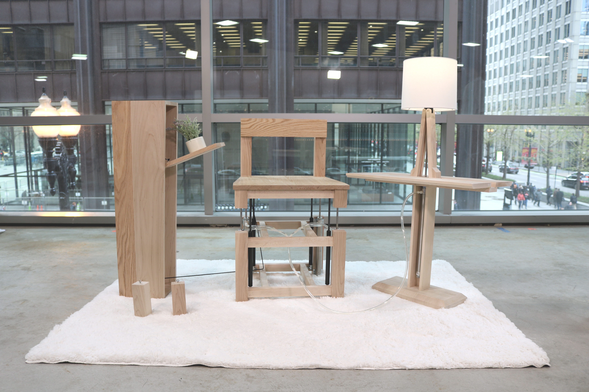
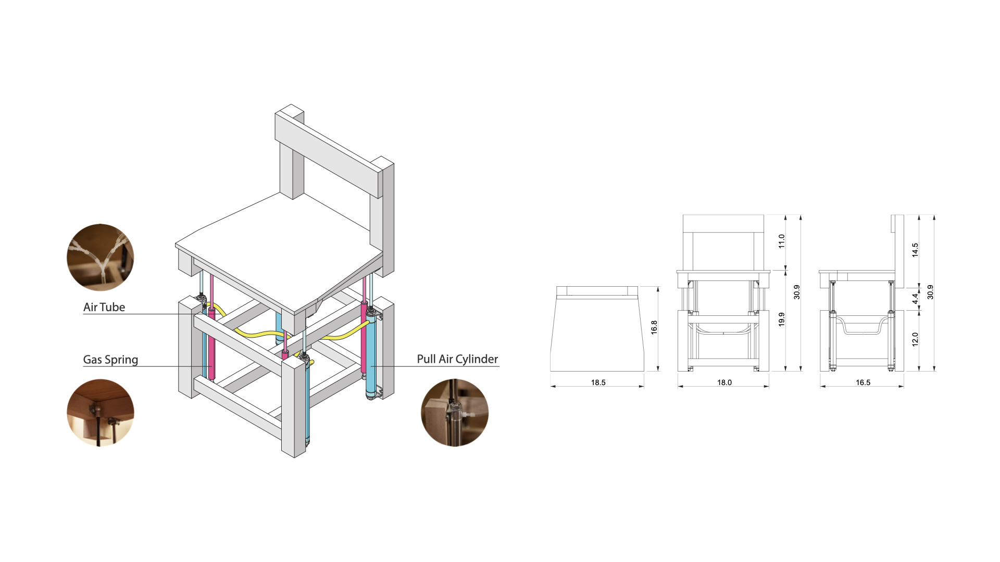
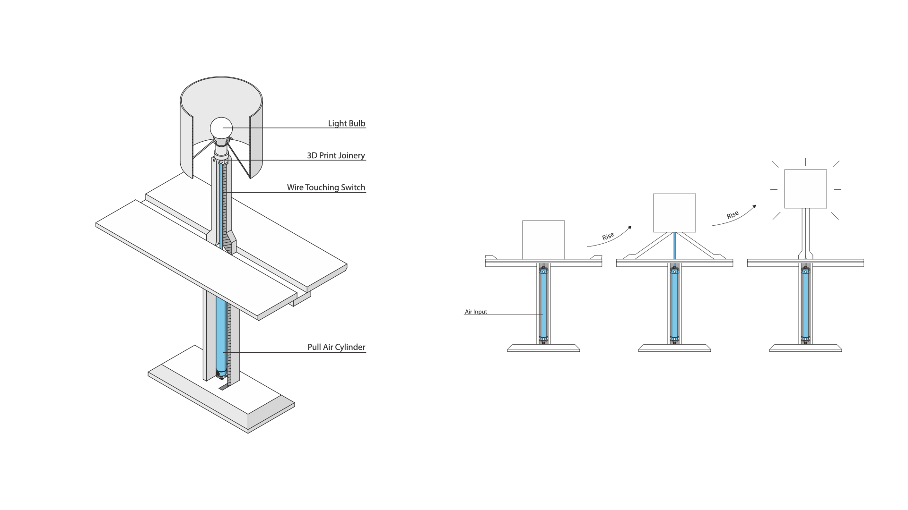
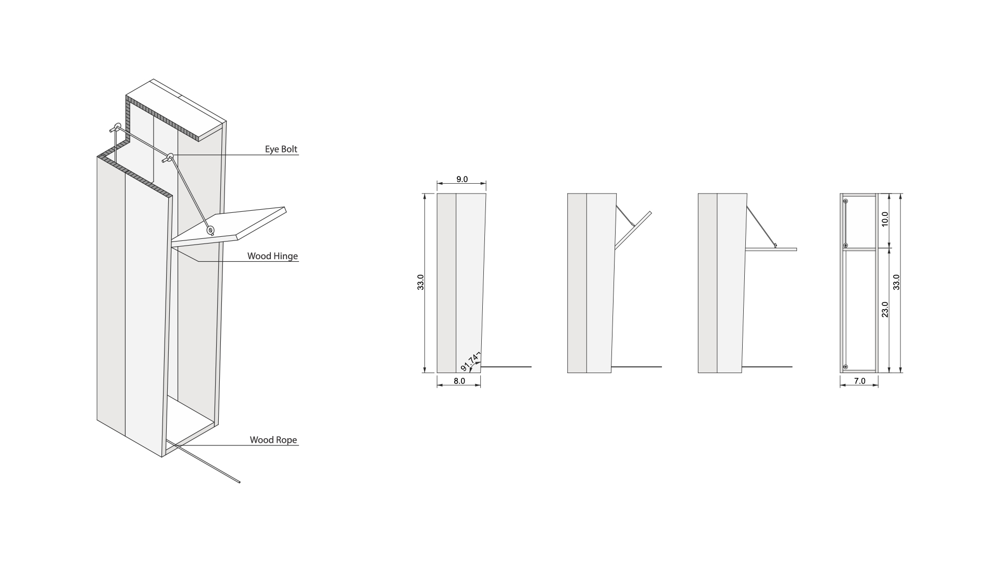

Motion Flow
Compelete Date: 2019/05
Brief
The relationship between human and object is relatively closed. Objects themselves are lifeless matter. They are still but always stand by you. People who live alone feel lonely because nothing react to their talking or moving. Like amazon smart speaker. So, What if we bring those dead things to life? What if we bridge the user and objects through a little body movement?
Detail
My project is exploring another possibility in the human-object relationship. In a domestic space, a chair is always the central part, because we spend most of our time on it. Chair can be viewed as a seating tool, a trigger, a button. When we sit on it, something will happen. It could be a movie time or just a morning coffee etc.
What else? The super normal super common things. Turning on a light. I know people don’t really mind pressing a button or pulling lighting cord. But if everything is ready with just a sitting motion, that would be great. Objects know your intention and they will help you achieve that.
Today, we talk a lot about internet based technology like the IoT(Internet of Thing) which is a way to connecting all the matters around us with internet and control them in the palm of your hand. That’s a good approach, but it’s a little bit removed from the real user experience. People want to not only see something but also touch it, feel it. That’s why even though today we have amazon and other online shops. Most people still prefer to go to the shopping mall. That’s what I am looking for in my project. To create sensitive touching feedback in a 3d object, and let the motion flow.
Ideate
A couple of inflatable furniture that is linked to an air pumping chair. An inflatable standing lamp and coffee table will connect the chair with a plastic tube. The air flow among these objects indicates continuous communication, and the role of the chair serves as a trigger to activate the whole system. I created this for a reading scenario. When a user sits on the chair, the air inside the chair will be deflated which is blowing up the standing lamp and coffee table through the plastic tube. Then the light will be triggered on when the lamp is rising.

Because of this air system, three pieces of furniture work together in a dynamic balance. That means when you move a little bit, and the light fluctuates as it is talking to you. After leaving this context, everything goes back to the initial state. Lamp and table fall and light gradually dims like sending you off.

Wooden Push Puppy Collapsing/Soft Robot Bending

Mechanism Movement
Process


Final Critique